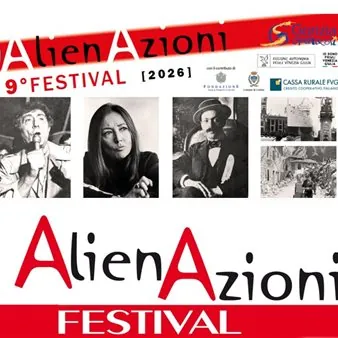

da gio 19 nov a gio 10 dic
9° Festival Alienazioni 2026
Torna a Gorizia il Festival AlienAzioni con un ricco programma di teatro, storia, reading e conferenze spettacolo: giovedì 19 novembre- ore 20.30 Kinemax, Piazza Vittoria 41 “Storie del Cantiere di Monfalcone” di R. Covaz Con P. Famularo, A. D'Alessandro, M. Trevisan Fisarmonica…
 Indicazioni
Indicazioni
- Costi e prenotazioni
- Costo non indicato · Prenotazione non indicata
- Programma
- Programma da verificare. Apri la fonte ufficiale per orari e possibili aggiornamenti.
- In caso di maltempo
- Nessuna indicazione specifica pubblicata.
- Note
- Acquisito automaticamente dalla fonte.
L’EVENTO
Descrizione completa
Torna a Gorizia il Festival AlienAzioni con un ricco programma di teatro, storia, reading e conferenze spettacolo:
giovedì 19 novembre- ore 20.30
Kinemax, Piazza Vittoria 41
“Storie del Cantiere di Monfalcone” di R. Covaz
Con P. Famularo, A. D'Alessandro, M. Trevisan
Fisarmonica: A. Ipavec
Videomaker: C. Foscolini
domenica 22 novembre - ore 17.00
Parco Basaglia (Comunità La Tempesta)
“Visto da vicino nessuno è normale” - Spettacolo teatrale su Franco Basaglia di A. Delneri
martedì 24 novembre - ore 20.30
“Libera. Oriana Fallaci: una voce scomoda” di M. Delpiccolo
Con F. Fantini e M. Delpiccolo
venerdì 27 novembre - ore 20.30
“La coscienza di Zeno. L'estraneo che è in noi” - Conferenza spettacolo con F. Meroi, A. Sartori, A. Bergamasco, G. Colella
martedì 1° dicembre - ore 18.00
Kulturni dom, via Brass 20
“Don Alberto: una vita per gli ultimi”
Don Alberto De Nadal dialoga con Alessandro Sartori
giovedì 3 dicembre- ore 20.30
“Il complotto e la beffa” di M. Fontanini
Iintroduzione di A. Visintin
giovedì 10 dicembre- ore 20.30
Palazzo De Grazia, via Oberdan 15
“Friuli 1976, il risveglio dell'Orcolat”
Reading di A. Delneri
Fisarmonica: M. Figheli
Ingresso libero a tutti gli appuntamenti
IL PROGRAMMA
Programma e orari
Appuntamenti raccolti dalle fonti elencate. Dove manca un orario, non è ancora disponibile in questa scheda.
Programma pubblicato
- Dal 2026-11-19 al 2026-12-10
INFORMAZIONI UTILI
Prima di partire
- Controllare la fonte prima di partire.
ORGANIZZAZIONE